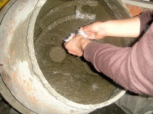
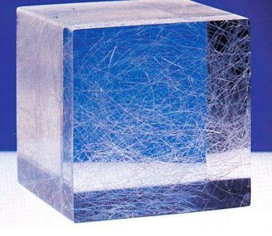
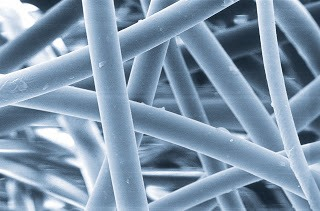
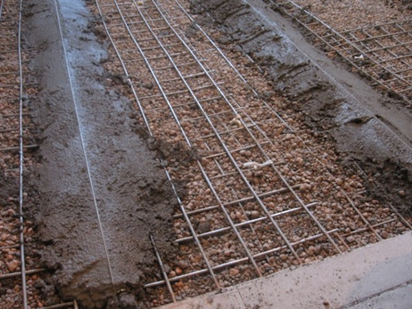
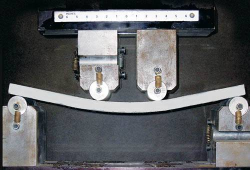
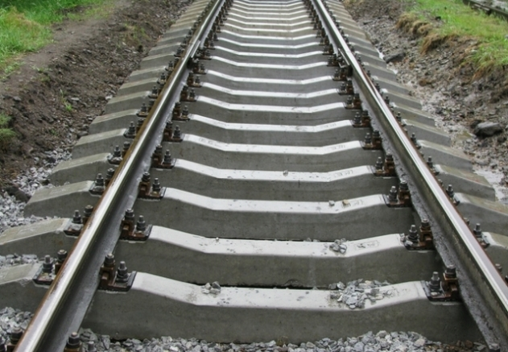
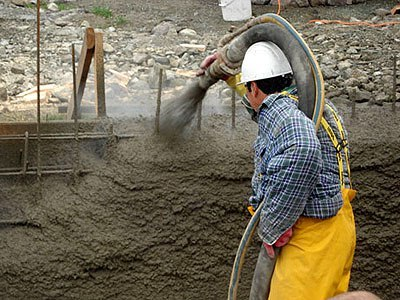
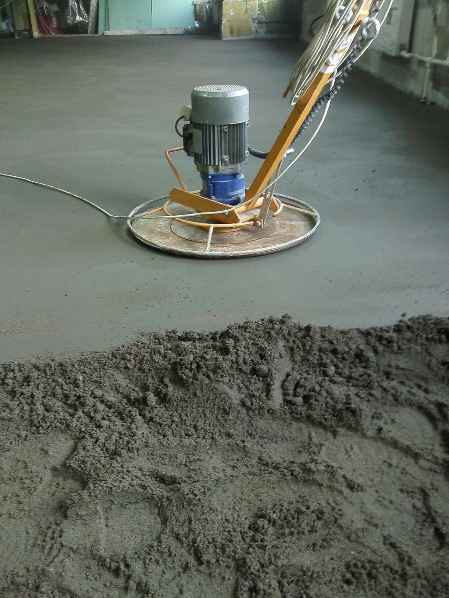
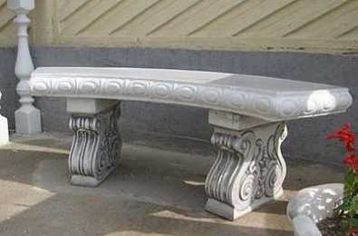

Фибра экономит время, средства, снижает брак, делает бетон менее электропроводимым и значительно более прочным на изгиб и сжатие, не окисляется в бетоне, как это происходит с металлом, улучшат внешний вид изделий, снижает пылеобразование Фибра повышает пластичность цементно-песчаной смеси позволяет работать с малообводненными смесями, например при устройстве полусухой стяжки пола и ремонте бетона.
Фибробетон широко используется в производстве гидросооружений, таких, как отстойники сточных вод, водосливы, водохранилища и бассейны, мосты, а также бетонные дороги, поскольку фиброволокно защищает поверхность от впитывания с водой антиобледеняющих солей, масел, бензопродуктов и других химических веществ Фиброволокно в бетонной смеси удерживает песок во взвешенном состоянии, предотвращая его оседание и подъем более мелкого по структуре цемента наружу и вымывания его с поверхности. Таким образом наличие фиброволокна в поверхностном слое бетона делает равномерным распределение всех его компонентов, сохраняя и повышая прочность бетона. Тесты показывают повышение прочности поверхностного слоя и сопротивляемость удару фибробетона до 5 раз. Фибрволокно вносится в бетонную смесь и перемешивается 5-10 минут с другими заполнителями на последней стадии замеса.
 Фибра, добавленная в бетон, не только продлевает срок его службы, но и повышает его эстетические свойства, надолго сохраняя привлекательный вид бетонных изделий и малых архитектурных форм Ни одна из известных добавок в бетон не ухудшает рабочих характеристик бетона с добавлением фибры, поскольку она не вступает с ними в химические реакции Фибра инертна по отношению к щелочной среде бетона и не вступает с ней в реакцию, в сравнении с металлом. Наличие фиброволокна в бетоне снижает риск взрывного откалывания кусков бетона при воздействии на него высоких температур.
 Фибрволокно вносится в бетонную смесь и перемешивается 5-10 минут с другими заполнителями на последней стадии замеса.
Волокна фибры распределяются по объему бетонной смеси во всех направлениях под разными углами, создавая прочный армирующий каркас будущего изделия.
Относительно невысокая толщина одного волоска компенсируется гигантским количеством волокон фибры, равномерно распределенных в бетоне и связывающих заполнители, придавая смеси отличную пластичность и непревзойденную прочность готовым изделиям.
 Ни одна из известных добавок в бетон не ухудшает рабочих характеристик бетона с добавлением фибры, поскольку она не вступает с ними в химические реакции.
В процессе твердения бетона происходит его дегидратация (усыхание), при этом образуются микроскопические водные каналы (капилляры), по которым из бетона выходит вода. После затвердения бетона эти каналы остаются полыми. Если затвердевший бетон соприкасается с водой, то капилляры снова начинают свою работу по всасыванию влаги. Вода может содержать различные примеси: соли, кислоты и другие агрессоры, разрушающие структуру бетона. При наступлении холодов заполненные водой микроканалы замерзают и расширяющийся лед делает эти каналы шире. Циклы замерзания и оттаивания раз за разом разрушают бетон. В бетоне, содержащем фиброволокно, такие каналы по большей степени заполнены волокнами, что препятствует движению воды. В процессе твердения вода меньше выходит наружу, а после затвердения меньше впитывается за счет отсутствия капилляров, что делает поверхность бетона значительно более прочной и гладкой. Данное свойство фибробетона повышает его морозостойкость до 7 раз.
Фибра инертна по отношению к щелочной среде бетона и не вступает с ней в реакцию, в сравнении с металлом. Наличие фиброволокна в бетоне снижает риск взрывного откалывания кусков бетона при воздействии на него высоких температур. Фибробетон широко используется в производстве гидросооружений, таких, как отстойники сточных вод, водосливы, водохранилища и бассейны, мосты, а также бетонные дороги, поскольку фиброволокно защищает поверхность от впитывания с водой антиобледеняющих солей, масел, бензопродуктов и других химических веществ.
 Армирующие свойства фиброволокна с легкостью заменяют устаревшие технологии по внесению стальной армирующей сетки в бетонные полы и другие бетонные изделия.
 Микрофибра повышает способность бетона к деформации без разрушения, это важно в критический период твердения: 2-6 часов после укладки, что способствует повышению внутренней прочности бетона. В твердеющем бетоне неизбежен процесс усадки и трещинообразования, однако наличие фиброволокна не дает трещинам расширятся, что значительно снижает риск разлома.
Бетон с фиброволокном способен поглощать огромное количество энергии при ударах за счет натяжения волокон, предотвращающих его раскалывание и делающих бетон относительно гибким Сопротивление удару фибробетона нашли применение в тяжелой промышленности и на военных объектах за счет высокой взрывоустойтивости. Высокая устойчивость к вибрациям позволяет использовать фибробетон в местах с повышенной сейсмической активностью, при производстве железнодорожных шпал, устройстве бетонных дорог и других объектов со значительными вибрационными нагрузками.
 Надежно скрепленные края усадочных микротрещин, уменьшенное количество водных капилляров повышают сопротивление истираемости рабочего поверхностного слоя бетона на 30% и выше, что делает такой бетон идеальной поверхностью в местах со значительными транспортными нагрузками.
Добавление фибры в бетон ускоряет твердение бетона, что повышает оборачиваемость заливочных форм до 2 раз.
Наличие в бетонной смеси микрофибры снижает микропластическую усадку и образование микротрещин в процессе твердения, что в значительной степени снижает брак.
 Наличие фиброволокна в бетоне в значительной степени снижает образование брака при расформовке бетонных изделий, а также снижает транспортировочный брак. Фиброволокно в бетоне повышает его адгезию и удобоукладываемость, что важно при производстве изделий методом торкретирования, и уменьшает отскок ЦПС на 20%.
Фибра повышает пластичность цементно-песчаной смеси позволяет работать с малообводненными смесями, например при устройстве полусухой стяжки пола и ремонте бетона.
 Фибра, добавленная в бетон, не только продлевает срок его службы, но и повышает его эстетические свойства, надолго сохраняя привлекательный вид бетонных изделий и малых архитектурных форм.
 Практический опыт показывает, что добавление фибры в пенобетон способно вообще избавить производство от расформовочного брака, а повышенная прочность на изгиб значительно сокращает транспортировочный брак При внесении полипропиленовой фибры можно добиться сокращения расхода цемента до 10% при сохранении технических характеристик готовых изделий.